지방족 화합물: 탄화수소 외
탄화수소가 아닌 지방족화합물에는 알코올,에테르,알데히드,케톤,카르복시산,에스테르 등등이 있다. 각각에 대해 알아볼 것이다. 지방족이라는 것은 사슬모양이거나, 또는 벤젠고리가 아닌 고리가 존재하는 화합물이다.
1)알코올
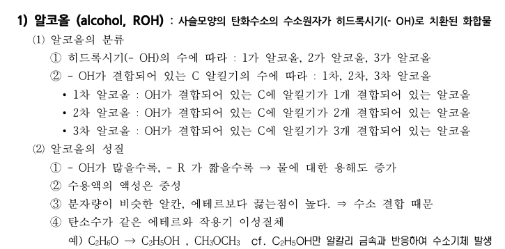
알코올은 OH기가 붙어있는 화합물이다. 히드록시기(-OH)의 수에 따라 1가 2가 3가 알코올로 나뉜다.
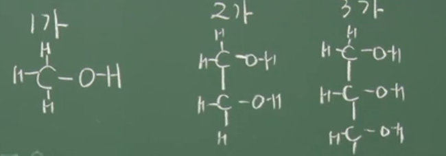
대충 이렇게 구분하면 될 것이다.
또한 차수라는 게 있는데, 알킬기 R이라고 하는 알케인 또는 사이클로알케인에서 수소가 하나 떨어져 나간 형태의 작용기가 몇개 붙어있냐를 의미한다.
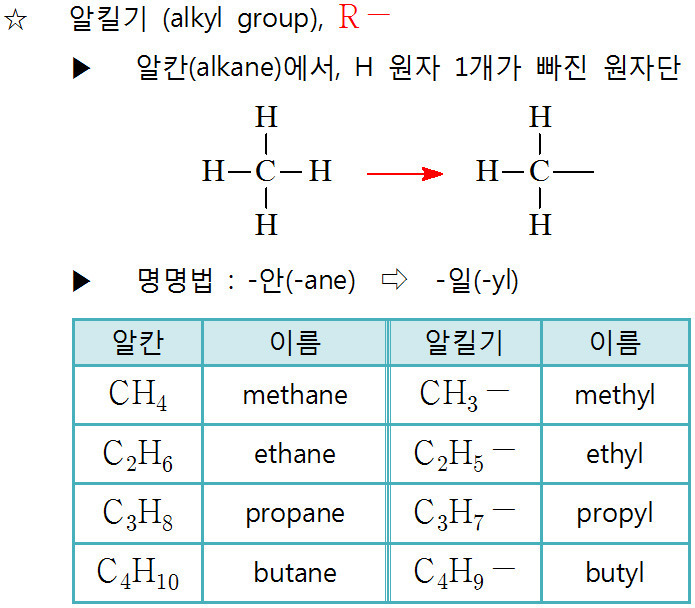
알킬기의 종류에 상관없이, 이것이 몇 개 붙어있으냐가 차수를 결정한다.
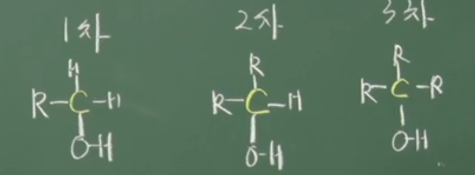
성질로는 수소결합을 하고 있다는 것이 있다.
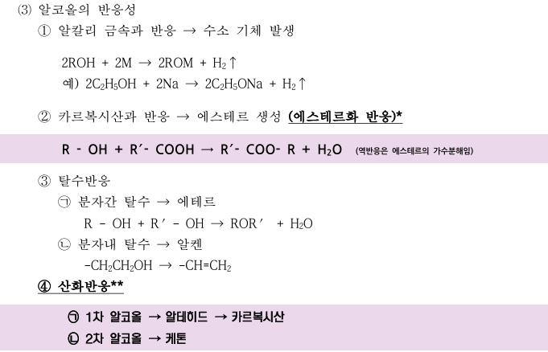
반응성을 살펴보면,
1)알칼리 금속과 알코올이 반응하면 수소기체가 발생한다.
2)카복실산과 반응하여 에스테르를 생성한다. (에스테르화 반응을 한다)
카르복시산은 R COOH로 구성되어있는데, ROH와 만나서 R COO R이 되고 H2O가 나온다. 이때 COO를 에스테르라고 한다.
3)탈수반응
물을 빼내는 반응이다. 2가지로 구분되는데, 분자와 분자가 만났을 때 물을 빼내는 분자간 탈수가 있고 그냥 알코올 내부에서 물을 바로 빼내는 분자내 탈수가 있다.
4)산화반응:산화는 수소가 빠지거나 산소가 추가되는 것을 의미한다.
ㄱ:1차 알코올 산화->알데하이드 -> 카르복시산
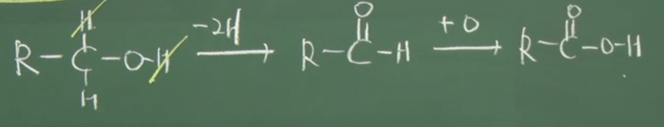
ㄴ:2차 알코올 산화->케톤
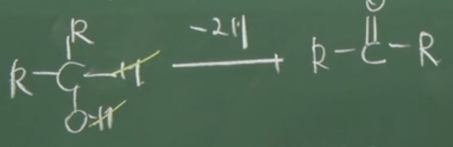
2)에테르
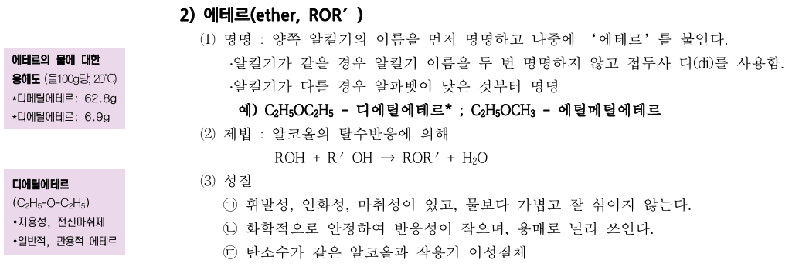
알킬기가 O에 붙어있다.
3)알데히드
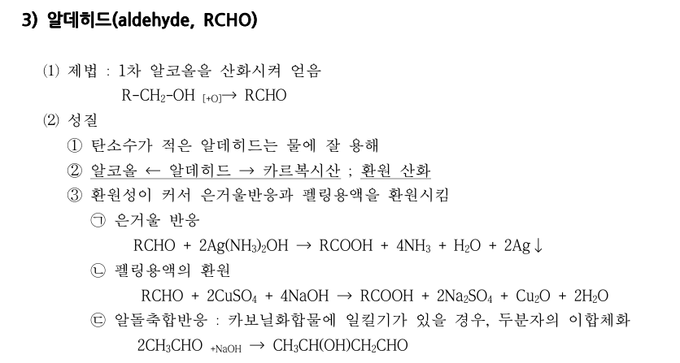
RCHO ->알데히드다. 알코올(RCH2OH)이 산화되면 알데히드CHO가 되고 또 산화되면 카복시산COOH이 된다
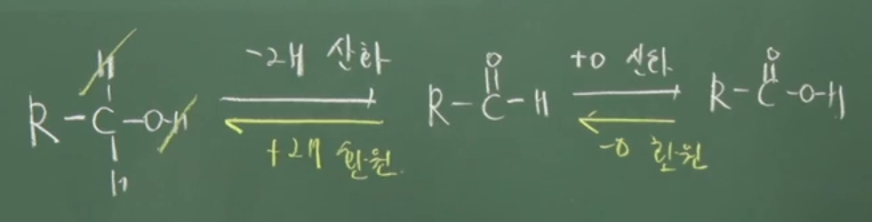
은거울 반응은 알데히드가 산화하여 카복시산이 만들어지는 반응이다. 펠링용액의 환원은 구리를 2가에서 1가로 만든다.
대표적인 알데하이드 2개를 알아보도록 하자
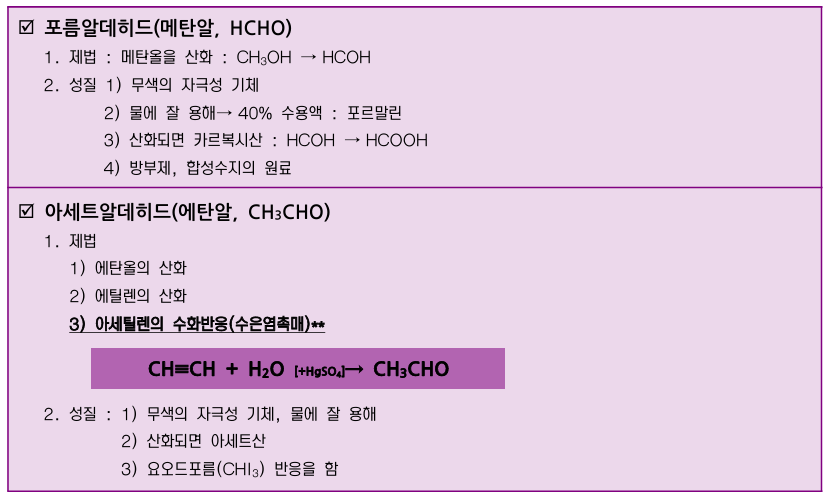
4)케톤
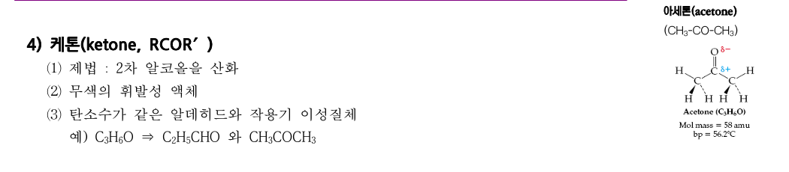
5)카르복시산
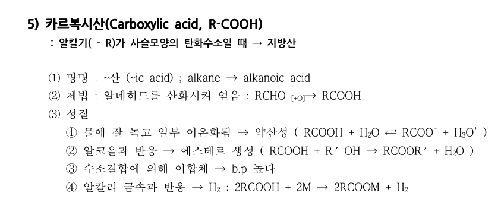
카복시산은 COOH이다. R이 사슬모양 탄화수소면 지방산이라고 부른다. 알코올과 반응하여 에스테르기 COO를 만든다. 또 수소결합에 의해 이합체가 된다고 한다.
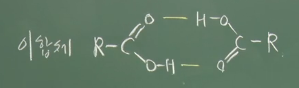
그외에 알칼리 금속과 반응하여 알코올 처럼 수소기체를 만든다. 알코올은 중성인데 카복시산은 약산성을 띈다. 카복시산의 일부 예시를 살펴보자.
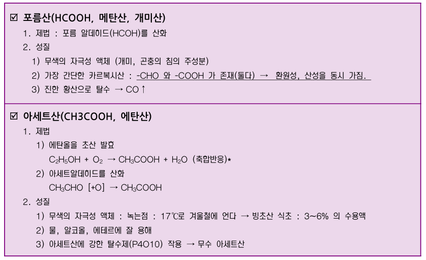
포름산은 포름알데히드(HCOH)를 산화시켜 얻는다. 이때 HCOOH다 보니 COOH와 CHO를 둘다 가지고 있어 카복실산의 산성과 알데히드의 환원성을 동시에 가진다.
아세트산은 CH3COOH로 에탄올을 산화시키면 아세트알데히드가 되고 이걸 산화하면 아세트산이 된다. 성질로는 산이니만큼 액체에 잘 용해된다. 또 어는점이 높아서 잘 언다. 이를 빙초산이라고 한다.
6)에스테르
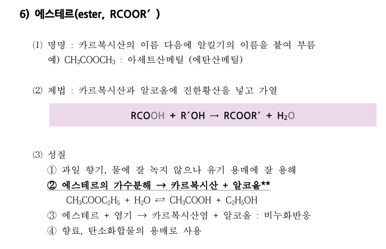
에스테르는 카복시살COOH에 알킬기가 붙은 것으로, RCOOR의 형태이다. 카르복시산과 알코올에 황산을 넣고 가열하여 만든다.